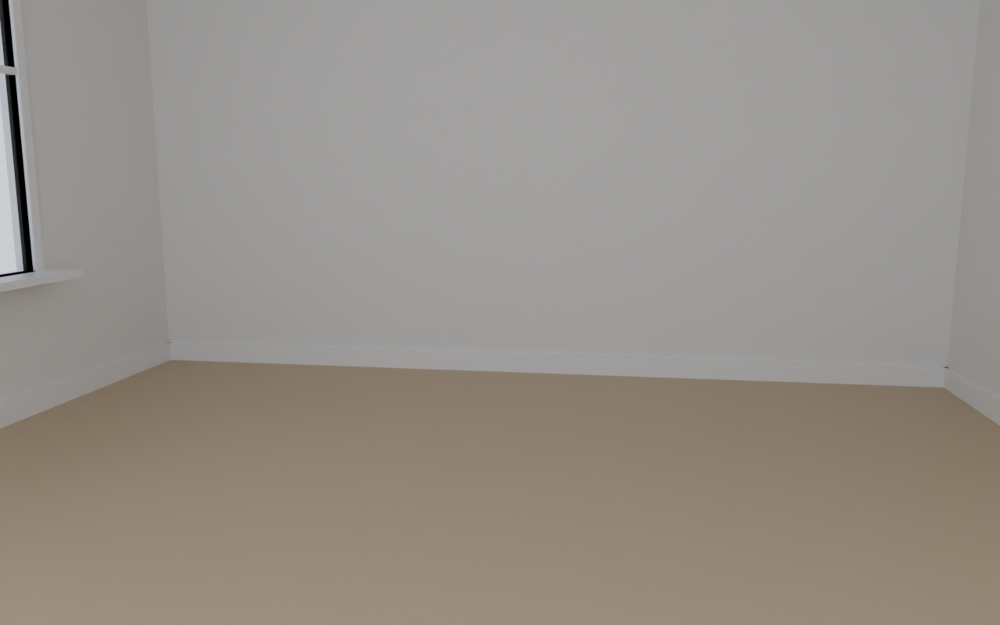
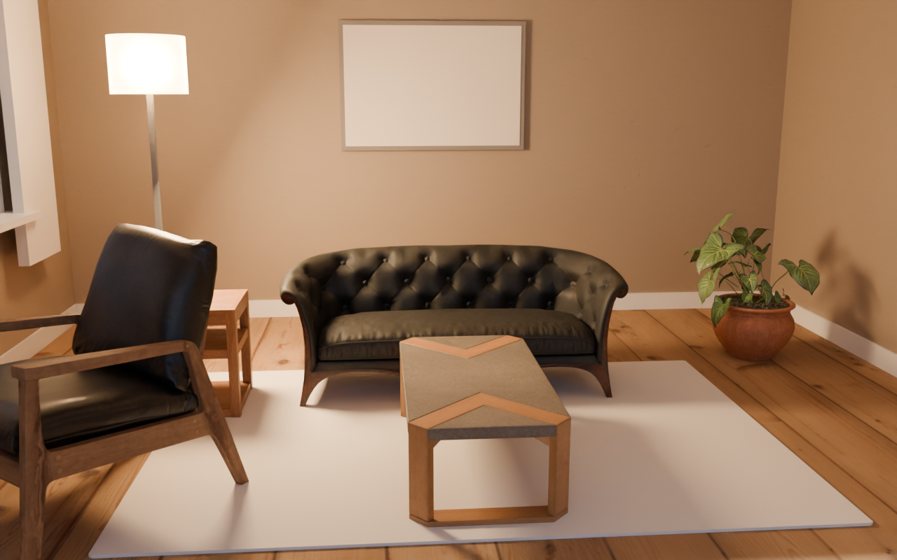

A brain + a judge steering a photoreal Blender interior (real CC0 furniture, PBR, HDRI daylight)
A photoreal living-room corner for a furniture catalogue hero shot: warm, calm, inviting, one clear focal composition (sofa + coffee table), natural daylight through a window plus one warm practical light, Scandinavian/Japandi taste, no clutter.
score 0.316 → 0.485 (+0.169) · best round r7
FIRST PLAN · r0

brain 0.540 · judge 0.13 · Object-shape (LO) and motion (MT) areas are low: a text-first screen with no clear object silhouette / Place areas (PPA/RSC) dominate: the background scene swallows the message
BEST · r7

brain 0.590 · judge 0.40 · Reward/value areas (OFC/vmPFC) are low: no 'I want this' signal / Face areas (FFA/STS) are silent: no human or gaze cue
Per round
| r | render | score | brain | judge | kept | why / objects |
|---|
| r0 | | 0.316 | 0.540 | 0.13
real 0.22 · light 0.22 · art 0.22 | ✓ | first plan
|
| r1 |  | 0.456 | 0.607 | 0.33
real 0.33 · light 0.22 · art 0.56 | ✓ | Added centered Japandi sofa-coffee-table-rug hero with side daylight and warm floor lamp for a single calm catalogue focal point.
sofa_02, modern_coffee_table_01, potted_plant_02 |
| r2 |  | 0.466 | 0.574 | 0.38
real 0.33 · light 0.22 · art 0.56 | ✓ | Added soft daylight area at left window plus sheer curtain and tuned sun for patches, with one small side table and warmer art to dress the hero as lived-in Japandi without competing clutter.
sofa_02, modern_coffee_table_01, potted_plant_02 |
| r3 |  | 0.398 | 0.557 | 0.27
real 0.22 · light 0.22 · art 0.33 | · | Dimmed flat fill to let directional sun cast real shadows, boosted warm practical, and added angled armchair as desirable second discovery while keeping sofa hero centered.
sofa_02, modern_coffee_table_01, potted_plant_02, modern_arm_chair_01 |
| r4 |  | 0.417 | 0.574 | 0.29
real 0.22 · light 0.22 · art 0.44 | · | Re-aimed sun through the left window with softer sky for real shadow patches, moved the floor lamp into frame as the visible warm practical, and added one straight side table plus warmer rug/art and tighter off-center camera to lift desirability and hold attention without clutter.
sofa_02, modern_coffee_table_01, potted_plant_02 |
| r5 |  | 0.428 | 0.571 | 0.31
real 0.22 · light 0.33 · art 0.44 | · | Killed flat wash by dropping cool fill to 20W and boosting warm practical, re-aimed sun/HDRI through left window for real shadows, added angled armchair + side table as lived-in second discovery, and shifted camera right to reveal window light patches while boosting floor lamp glow.
sofa_02, modern_coffee_table_01, potted_plant_02, ArmChair_01, side_table_01 |
| r6 |  | 0.476 | 0.622 | 0.36
real 0.33 · light 0.22 · art 0.56 | ✓ | Removed cool flat fill leaving one warm key, lowered sun/world for real window shadows with boosted lamp practical, plus angled armchair and side table for human cue and second discovery.
sofa_02, modern_coffee_table_01, potted_plant_02, modern_arm_chair_01 |
| r7 | | 0.485 | 0.590 | 0.40
real 0.33 · light 0.33 · art 0.56 | ✓ | Pulled camera back to eye-level to include armchair and art, turned chair to face hero, moved warm key to floor-lamp glow, and added one small side table as calm second discovery.
sofa_02, modern_coffee_table_01, potted_plant_02, modern_arm_chair_01, side_table_01 |
| r8 |  | 0.473 | 0.589 | 0.38
real 0.33 · light 0.33 · art 0.56 | · | Swap black sofa for light Sofa_01 hero, fix blown art with darker muted canvas and lower exposure/sun, and add small plant accent as second discovery with boosted warm key for desirability.
Sofa_01, modern_coffee_table_01, potted_plant_02, modern_arm_chair_01, side_table_01, potted_plant_04 |
Best spec
{
"room": {
"w": 5.0,
"d": 6.0,
"h": 2.8,
"floor_tex": "hinoki_planks",
"wall_tex": "beige_wall_001",
"wall_color": "#E8E0D4",
"ceiling_color": "#FFFFFF",
"baseboard": true,
"floor_scale": 1.0,
"wall_scale": 1.0
},
"window": {
"wall": "left",
"x": 1.0,
"z": 1.6,
"w": 1.8,
"h": 1.4,
"frame_color": "#FFFFFF",
"curtain_color": "#F5EFE6",
"sill": true
},
"world": {
"hdri": "kloofendal_48d_partly_cloudy_puresky",
"strength": 0.7,
"rotation_deg": 65
},
"sun": {
"strength": 6.0,
"elevation_deg": 30,
"azimuth_deg": 95,
"kelvin": 5200
},
"lights": [
{
"type": "area",
"pos": [
-1.4,
1.6,
1.4
],
"size": 0.5,
"power": 90,
"kelvin": 2700
}
],
"objects": [
{
"asset": "sofa_02",
"pos": [
0.0,
1.5
],
"rot_deg": 0,
"scale": 1.0
},
{
"asset": "modern_coffee_table_01",
"pos": [
0.0,
0.4
],
"rot_deg": 0,
"scale": 1.0
},
{
"asset": "potted_plant_02",
"pos": [
1.8,
1.9
],
"rot_deg": 0,
"scale": 1.0
},
{
"asset": "modern_arm_chair_01",
"pos": [
-1.5,
0.1
],
"rot_deg": -40,
"scale": 1.0
},
{
"asset": "side_table_01",
"pos": [
-1.35,
1.2
],
"rot_deg": 0,
"scale": 1.0
}
],
"rug": {
"x": 0.0,
"y": 0.7,
"w": 2.8,
"d": 2.0,
"color": "#D9CFC0"
},
"floor_lamp": {
"x": -1.6,
"y": 1.8,
"height": 1.6,
"shade_color": "#F5E8D5",
"kelvin": 2700,
"power": 100
},
"art": {
"wall": "back",
"x": 0.0,
"z": 1.6,
"w": 1.2,
"h": 0.8,
"color": "#D6C7B0",
"frame_color": "#3A332C"
},
"camera": {
"pos": [
-0.4,
-3.1,
1.55
],
"look_at": [
-0.05,
1.1,
0.65
],
"lens_mm": 35,
"fstop": 5.6
},
"render": {
"samples": 128,
"w": 1280,
"h": 800,
"exposure": 0.55,
"look": "medium"
}
}
Assets: Poly Haven (CC0). Renderer: Blender Blender Cycles, OIDN denoise, AgX.